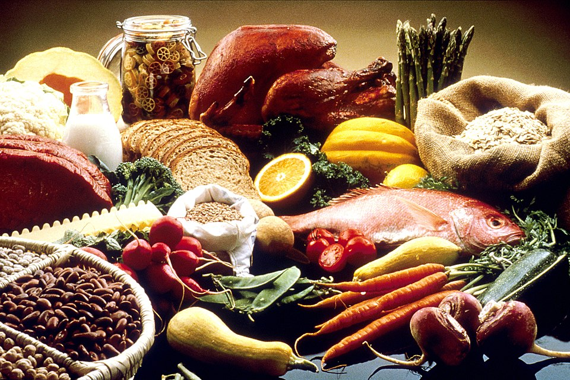

⛏Bread is our main food source.
パンが主な食料源です。
/ˈbrɛdɪz ˈaʊər ˈmeɪn ˈfuːd ˈsɔrs/
- bread の /d/ が is の /ɪ/ に連結して [ˈbrɛdɪz] となる
ブレディズ アワー メイン フード ソース

⛏Bread is our main food source.
パンが主な食料源です。
⛏I need a food block to survive.
生き残るために食料ブロックが必要だ。
⛏Eat a food item.
食料アイテムを食べてください。
I need to farm more foods for my villagers.
私の村人たちのためにもっと多くの食べ物を栽培する必要があります。
These foods can heal your hunger bar quickly.
これらの食べ物はあなたの空腹ゲージをすぐに回復させることができます。
⛏We ran out of food and had to hunt animals.
食料が尽きて、動物を狩らなければならなかった。
⛏That's interesting—food for thought about block mechanics.
興味深い。ブロック力学について考えるネタだ。